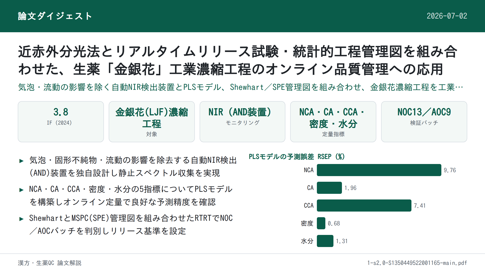
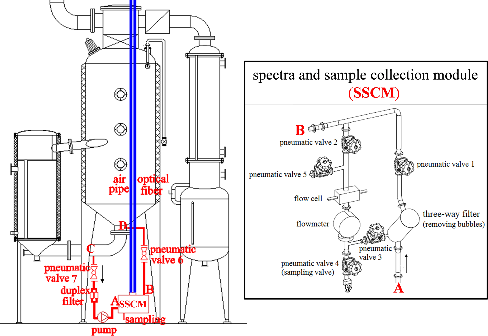
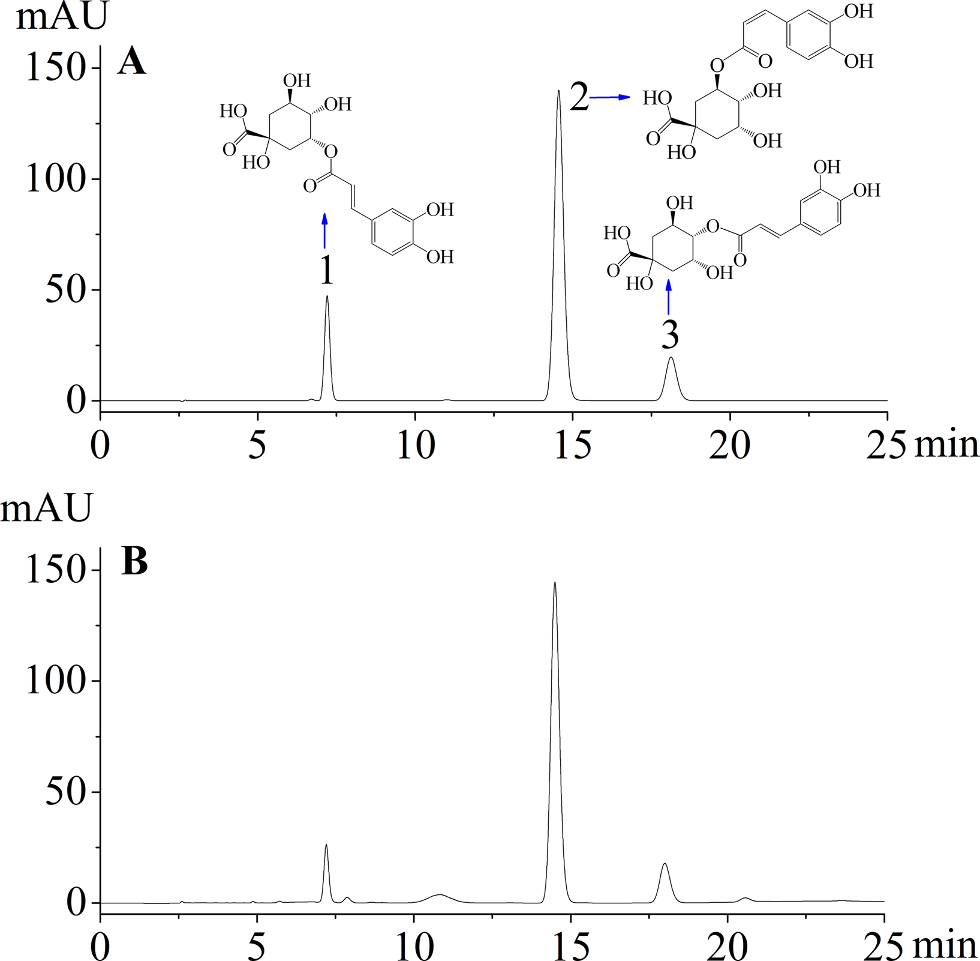
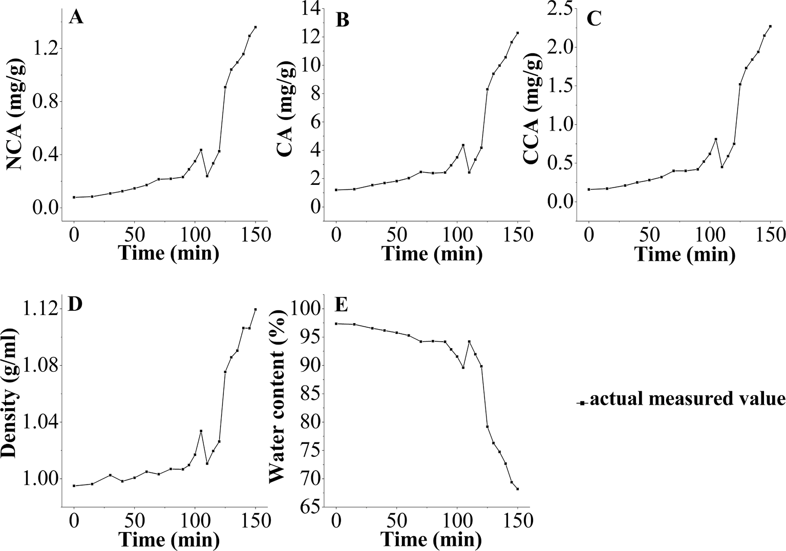
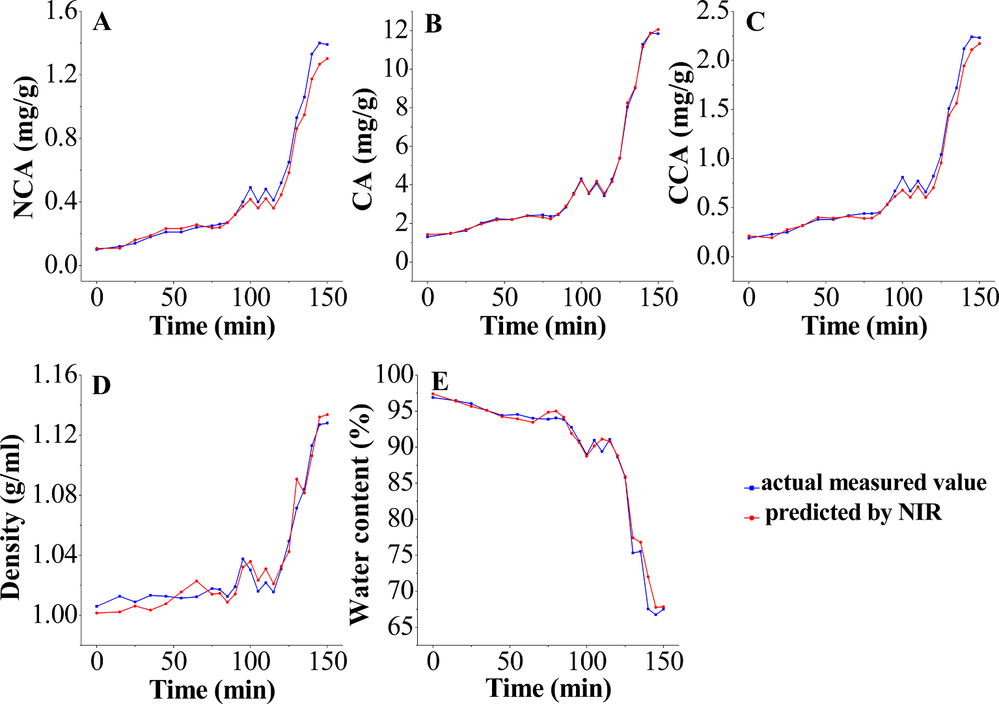
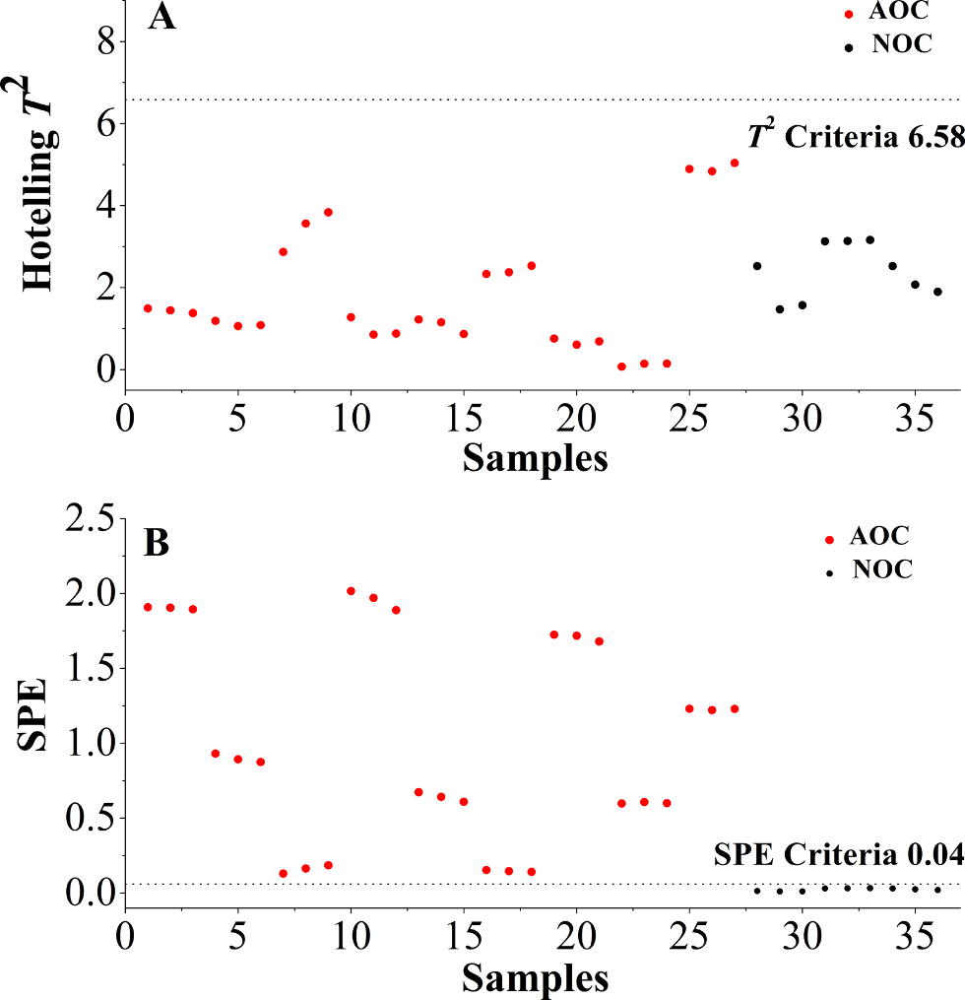

近赤外分光法とリアルタイムリリース試験・統計的工程管理図を組み合わせた、生薬「金銀花」工業濃縮工程のオンライン品質管理への応用

<!-- 方針: ほぼ全訳＋必要に応じた補足。原文構成に沿って訳出。「> 補足:」は訳者注。 -->
書誌情報
- 原題: Application of near infrared spectroscopy and real time release testing combined with statistical process control charts for on-line quality control of industrial concentrating process of traditional Chinese medicine "Jinyinhua"
- 著者: Ye Jin ᵃ, Wenjun Du ᵇ, Xuesong Liu ᶜ, Yongjiang Wu ᶜ,\（ᵃ 麗水学院 生態学部／浙江省麗水市、ᵇ 金華市中心医院／浙江省金華市、ᶜ 浙江大学 薬学院／杭州市、中国。\責任著者）
- 掲載: Infrared Physics & Technology 123 (2022) 104135. https://doi.org/10.1016/j.infrared.2022.104135
- インパクトファクター: 3.8（Infrared Physics & Technology, JCR 2024 / Clarivate。複数の二次情報源（journalimpact.org・bioxbio 等）で確認した値。一次情報源のJCRレポートには直接アクセスできなかったため、正確な値は必要に応じ再確認を推奨）
- 受理経過: 受領 2021-12-24 / 改訂 2022-03-15 / 採録 2022-03-15 / オンライン公開 2022-03-18
補足: LJF = Lonicerae Japonicae Flos（金銀花、スイカズラの乾燥花蕾）。NCA = ネオクロロゲン酸、CA = クロロゲン酸、CCA = クリプトクロロゲン酸（いずれも金銀花の主要活性成分であるフェノール酸類）。RTR(T) = Real Time Release (Testing)、PAT = Process Analytical Technology、SPC = Statistical Process Control、MSPC = Multivariate SPC、AND = Automatic NIR Detection（本研究独自の自動NIR検出装置）、NOC = Normal Operational Condition（正常操業条件）、AOC = Abnormal Operational Condition（異常操業条件）。
要旨（Abstract）
濃縮工程は、金銀花（Lonicerae Japonicae Flos, LJF、中国語で「金銀花」）製品の製造における重要な単位操作である。本研究では、濃縮工程をオンラインでモニタリングし、最終LJF濃縮物の品質管理戦略を構築するために、近赤外(NIR)分光法とリアルタイムリリース試験(RTRT)を統計的工程管理(SPC)手法と組み合わせた手法を提示した。自動NIR検出(AND)装置を設計し、濃縮物中の気泡・固形不純物・流動がNIRスペクトルに与える影響を排除できることを実証した。部分最小二乗法(PLS)モデルを構築し、ネオクロロゲン酸(NCA)、クロロゲン酸(CA)、クリプトクロロゲン酸(CCA)、密度、水分含量をオンラインで定量した。これらのモデルはリアルタイムのデータを提供し、良好な予測能力を示した。単変量Shewhart管理図、多変量Hotelling T2管理図、二乗予測誤差(SPE)管理図を含むSPCツールを比較検討し、RTRTに適用した。RTRTの結果、最終LJF濃縮物のリリース基準は以下の通りであった：1.09 mg/g ＜ NCA ＜ 1.53 mg/g、10.00 mg/g ＜ CA ＜ 13.44 mg/g、1.71 mg/g ＜ CCA ＜ 2.43 mg/g、1.10 g/ml ＜ 密度 ＜ 1.14 g/ml、64.07% ＜ 水分含量 ＜ 72.99%、かつSPE値 ＜ 0.04。ShewhartおよびSPE管理図は、異常の検出と正常バッチの放出(リリース)判定に有用であることが示された。本研究は、NIRとRTRTをSPC管理図と組み合わせることが、漢方薬(TCM)工業濃縮工程のオンライン品質管理において有効であることを実証した。
1. 序論（Introduction）
2004年、米国食品医薬品局(FDA)はプロセス解析技術(PAT)のガイダンスにおいてリアルタイムリリース(RTR)の概念を提唱し、工程データに基づき工程内および/または最終製品の許容可能な品質を評価・保証する能力と定義した。2009年、国際調和会議(ICH)は、バッチリリースと区別するため、医薬品開発Q8(R2)のガイドラインにおいてRTRをリアルタイムリリース試験(RTRT)に改めた。このガイドラインは、RTRTが最終製品試験を代替しうることを示唆しており、RTRTの規格を策定する際には、品質特性、管理方法(PAT等)、判定基準が重要な検討事項であるとした。2012年、欧州医薬品庁(EMA)はRTRTに関するガイドラインを発行し、原薬・中間体・最終製品に対するRTRTを提案した。このガイドラインは、RTRTがNIR分光法（通常は多変量解析と組み合わせて用いられる）などのPATツールを利用しうることを示した。
漢方薬(TCM)近代化の進展に伴い、工程解析および工程管理ツールはTCM製薬において急速に発展してきた。しかし、原生薬の品質は産地、栽培条件、収穫時期、貯蔵条件等によって大きく左右されうる。TCMの製造は複雑な化学成分と工程ステップを伴い、in-line／on-lineモニタリングと工程管理を困難にしている。そのためTCM業界では、サンプル調製に起因する誤差や内在的な時間遅延といった重大な欠点があるにもかかわらず、従来のオフライン分析法が中間体・最終製品の測定において依然として主流である。近年、中国食品薬品監督管理局(CFDA)はTCMの品質管理水準を高めるためPATツールの導入を奨励している。NIR分光法は代表的かつ汎用的なPATツールであり、迅速・非破壊・非汚染という特性を持ち、従来のオフライン分析法と比較して分析時間を大幅に短縮できる。TCM製造におけるNIRベースのPAT応用は、原料[5–7]、抽出[8–10]、混合[11]、濃縮[12]、アルコール沈殿[13,14]等、数多く報告されている。しかしこれらの試みの多くは実験室・パイロットスケールで実施されたものであり、TCM製造における工業規模でのin-line／on-line NIR応用の報告は少ない。
金銀花（Lonicerae Japonicae Flos, LJF）はスイカズラ（Lonicera japonica Thunb.）の乾燥花蕾に由来する。中国において重要な医薬品／食品資源として、数千年にわたり解熱・抗炎症の治療に広く用いられてきた。ネオクロロゲン酸(NCA)、クロロゲン酸(CA)、クリプトクロロゲン酸(CCA)等のフェノール酸類は主要な生理活性成分である[15]。抗菌・抗ウイルス・解熱作用を有することから、レドュニン注射液や双黄連錠等の中成薬の原料としても用いられる[16]。LJF製品の製造において、抽出液の濃縮は溶媒除去のための重要な単位操作であり、下流工程および最終製品の品質に重大な影響を及ぼす。TCM工業生産では、濃縮工程の工程管理は通常、経験豊富なオペレーターが生産時間・手動測定した密度・濃縮物の目視性状の組み合わせから濃縮の進行度を判断することに依存している。しかし、この管理方法は、原材料や抽出液等の物性(material attributes)や、濃縮温度・圧力等の重要工程パラメータ(critical process parameters)が中間体・最終製品に与える影響を無視し、工程の乱れを終点でしか(あるいは全く)検出できないため、あまり効果的ではない。さらに、濃縮物の密度・濃度その他のパラメータがデジタル的・視覚的にモニタリングされていないため、濃縮工程の終点を精密に管理することができない。濃縮工程では大量の溶媒が蒸発し、密度は連続的に上昇する。特に最後の30分間では、終点まで密度が急激に上昇する。密度は濃縮工程の終点判定における第一の評価指標であるだけでなく、後続の精製・乾燥工程に影響を与える重要な因子でもある。工程効率の改善とバッチ間変動の最小化のため、多変量解析法と組み合わせたNIR技術は、LJF濃縮工程における重要品質特性のリアルタイムモニタリングを可能にし、継続的品質検証とリアルタイムリリースを実現する上で大きな価値を持つと考えられる。密度、残留溶媒(水分)、および医薬品成分(NCA、CA、CCA)は、LJF濃縮工程における重要品質特性である。NCA、CA、CCAはLJF濃縮物中で比較的高濃度であるため、オンラインNIRの実現可能性が担保される。
本研究の全体目的は、RTRTの概念をTCM業界に導入することである。NIR分光法とRTRTは、工業規模で濃縮工程をオンラインモニタリングし、最終濃縮物の品質管理戦略を構築するために初めて適用された。われわれの過去の研究[17,18]によれば、液体中間体の気泡・固形不純物・流動はNIRスペクトルに重大な影響を及ぼしうる。特に濃縮工程では、真空・沸騰・乱流により大量の気泡が発生し、異常なスペクトルデータをもたらす。収集されるNIRスペクトルの精度と再現性を高めるため、本研究は静止スペクトル収集(static spectral collection)という手法を独創的に提案し、自動NIR検出(AND)装置を設計して工業規模の濃縮工程のオンラインモニタリングに適用した。部分最小二乗法(PLS)モデルを構築し、NCA、CA、CCA、密度、水分含量のオンライン定量に適用した。Shewhart、Hotelling T2、二乗予測誤差(SPE)等のSPC管理図を比較検討し、RTRTに適用した[19]。正常操業条件(NOC)下で得られたバッチを用いてバッチ再現性を検討し、RTRTの許容可能なリリース基準である管理限界を定めた。工程パラメータの人為的な変動を意図的に発生させ、フォールト検出能力を評価した。これらの工程解析手法・技術から得られた知見は、工程理解の向上、品質管理水準の引き上げ、そして最終的には最終製品試験の削減・代替に活用できる。
2. 材料と方法（Materials and Methods）
2.1 動的濃縮工程
LJFの動的濃縮は、中国のTCM製薬工場に設置された6基の3トン濃縮機（No. I〜VI）で実施された。LJFの水系抽出液を濃縮機に送液し、通常操業条件（80 ℃、150分間、真空下 −0.04〜−0.08 MPa）で濃縮した。蒸気エネルギーを節約するため、体積が70%以上減少した時点で、濃縮機No. II〜VIの濃縮物を順次濃縮機No. Iへ送液した。濃縮物を合流させた後、動的濃縮工程全体の完了までに約50分を要した。密度値は最後の30分間、5〜10分ごとに手動で測定された。終点は密度が1.10〜1.12 g/mlに達した時点とした。
2.2 AND装置とオンラインスペクトル測定
NIR分光法を工業規模のTCM製造工程のリアルタイムモニタリングに適用することは困難である。オンラインモニタリングのため、本研究ではAND制御システム（図1）を構築・適用した。このシステムは、生産現場のAND装置、NIRワークステーション、自動制御センターの3部分から構成される。AND装置（図2で赤色に着色）は、収集されるNIRスペクトルに対する濃縮物中の気泡・固形不純物・流動の影響を低減するために設計されたもので、デュプレックスフィルター、ロータリーポンプ、スペクトル・サンプル収集モジュール(SSCM)、光ファイバー配管、エア配管、および空気圧バルブ6・7から構成される。図1・図2に示す通り、SSCMは空気圧バルブ1〜5、三方フィルター、流量計、サンプリング口、および2本の透過型プローブ(Solvias社、ドイツ)を備えたフローセルから構成される。AND装置内の流量計、ロータリーポンプ、すべての空気圧バルブは、自動制御センター内の自動制御システム(ACS)により制御された。濃縮物が粘性を持つため、AND装置は濃縮機No. Iの循環ループに設置され、LJF濃縮物がフローセルへ円滑に流入できるようにした。NIR放射を伝送しオンラインスペクトルを収集するため、プローブは光路長2 mmのフローセルに挿入され、光ファイバーを介してMatrix-F FT-NIR分光計（Bruker Optics社、ドイツ）に接続された。光ファイバー1本あたりの長さは30 m（片道長）であった。
スペクトルデータの取得・処理・出力は、OPUS PROCESSソフトウェア（Bruker Optics社、ドイツ）により実行され、周期的な測定の実行、測定スペクトルの評価、記録データの出力を行うことができた。OPUS PROCESSソフトウェアで用いられる標準化された通信インターフェースであるOLE for process control (OPC)を用いてACSと通信した。処理されたスペクトルデータは評価されACSワークステーションに転送され、得られた測定データを濃縮工程の制御に用いることができた。ACSワークステーションとOPUS PROCESSソフトウェアはいずれも編集可能なアラーム限界を提供しており、異常な濃縮工程の際に発生しうる外れ値の識別に用いることができた。現在の解析値が定義された管理限界を超えた場合、ACSおよびOPUS PROCESSソフトウェアは信号によりこの状況を通知される。アラームレベルはNIRワークステーションとACSワークステーションの両方で同時に確認できる。オンラインモニタリングが必要な場合、ACSから送信されるトリガーによりOPUS PROCESSソフトウェアとAND装置が起動する。設計された手順に従い、AND装置が起動すると、流量計とロータリーポンプが起動し、空気圧バルブ2、3、6、7が開き、空気圧バルブ1、4、5が閉じる。これにより、濃縮機内のLJF濃縮物がフローセルを通過できるようになる。NIRスペクトルを収集する際は、空気圧バルブ2・3を閉じ、空気圧バルブ1を開く。これによりフローセル内のLJF濃縮物の流れが止まり、静止スペクトル収集が可能となり、収集スペクトルのベースラインに対する流量・気泡の影響を排除できる。サンプリングの際は、NIRデータ収集の終了時に空気圧バルブ4・5を開き、LJF濃縮物は重力によって配管から流出し自動的にサンプリングされる。NIRスペクトルまたは濃縮物の収集後、空気圧バルブ2・3を再度開き、空気圧バルブ1を再度閉じる。これにより新鮮なLJF濃縮物が再びフローセルを通過できるようになる。また、気泡除去機能を備えた三方フィルターにより、固形不純物と気泡を効果的に除去できる。NIRスペクトル測定は5分ごとに実施され、4000〜12,000 cm⁻¹の範囲を分解能8 cm⁻¹で収集した。各スペクトルは32回のスキャンの平均とした。動的濃縮工程開始時には濃縮物を10〜15分ごとに収集し、濃縮物の合流（No. II〜VI → No. I）後は5分ごとに収集した。


2.3 参照分析（リファレンスアッセイ）
LJF濃縮物中のNCA、CA、CCAの濃度は、バリデーション済みの高速液体クロマトグラフィー(HPLC)法により分析された。クロマトグラフィー分離は、Agilent 1260 HPLCシステム(Agilent Technologies社、米国)を用い、Kromasil 100–5-C18カラム（4.6 × 250 mm, 5 μm）、カラム温度30 ℃で実施した。移動相は0.1%リン酸水溶液とメタノール(v:v = 80:20)からなり、流速1.0 ml/minとした。注入量は10 μlとした。検出波長は327 nmに設定した。工業濃縮工程中に採取した濃縮物（約1 g）を水で25〜100 mlに希釈し、遠心分離・ろ過してHPLCシステムに注入した。HPLC法のバリデーションは中国薬局方(2020年版)[20]に準拠して実施された。システム適合性、特異性、直線性、範囲、精度、再現性、安定性、回収率等のバリデーションパラメータを検討した。
密度は、80 ℃で濃縮物1 mlを秤量して測定した。密度値は ρ = m/v（v = 1 ml）として算出した[21,22]。水分含量は、中国薬局方(2020年版)[20]で推奨される古典的な乾燥減量法により測定した。すべての実験は3回繰り返した。
2.4 NIRモデル開発
文献によれば、多変量解析法はNIRデータから化学的・物理的情報を抽出するための必須ツールである。中でもPLS回帰は最も広く用いられる線形多変量回帰法であり、文献[23–25]で詳細に論じられている。本研究では、スペクトル前処理とPLS回帰はOPUSソフトウェア(Bruker Optics社、ドイツ)を用いて実施した。1個抜き交差検証(LOOCV)法と予測残差二乗和(PRESS)値を用いて最適な因子数を決定した。さらに、キャリブレーション結果は次の評価パラメータにより評価した：キャリブレーションセットの相関係数(R)、キャリブレーションの二乗平均平方根誤差(RMSEC)、交差検証の二乗平均平方根誤差(RMSECV)、キャリブレーションの相対標準誤差(RSEC)。予測結果は次の評価パラメータにより評価した：予測セットの相関係数(r)、予測の二乗平均平方根誤差(RMSEP)、予測の相対標準誤差(RSEP)。上記評価パラメータの詳細は文献[26,27]を参照されたい。
本研究では、動的濃縮工程の13のNOCバッチ(NOC-1〜13)をオンラインでNIRモニタリングした。バッチNOC-1〜10から収集した209の工程内(in-process)サンプルをキャリブレーションセットとしてPLSモデルを構築した。バッチNOC-11〜13は、構築したPLSモデルのオンライン測定への有用性を示し、モデルの予測能力を評価するために実施した。
2.5 品質管理図
品質管理図は、製造工程が「統計的管理状態」にあることを検証するための典型的なグラフィカルツールである[28]。従来型の単変量管理図（Shewhart等）は、バッチ工程における重要品質特性を個別にモニタリングするために構築される。関心対象の特性が、多数の相互相関変数を含む多変量システムに存在する場合、MSPC法を適用できる。MSPC管理図は主に主成分分析(PCA)から導出され、主成分(PC、すなわち因子)を抽出し、工程モニタリングのためのHotelling T2、SPE等の管理図を構築する。したがって、PCAベースのMSPC法は工程における高次元・相関変数を扱う能力を有する[29]。研究者らは実験室規模でTCM生産工程にMSPCとNIRを適用しており、MSPCはバッチ工程の異常検出と再現性評価に有効であることが示されている[13,30]。
本研究では、RTRTのために2種類の品質管理図、すなわち単変量Shewhart管理図と、Hotelling T2およびSPEを含む多変量統計的工程管理(MSPC)管理図を用いた。これらの管理図はフォールトの識別とNOCバッチのリリースに適用された。NOCバッチから得られた計54の終点サンプルを用いてSPC管理図の管理限界を定めた。SPC管理図の管理限界（すなわちRTRTのリリース基準）を満たすNOCバッチは、後続の製造単位操作へリリースされる。定義された管理限界を超える異常なオンラインデータは外れ値として識別され、アラームが発せられる。LJF抽出液の製造には年間数十バッチの原材料が使用される。バッチ間で原材料の由来・品質に差異がある。原材料の由来が変わった場合、既存のデータセットに新たな最終濃縮物を組み込むことで管理限界が更新される。
RTRTの実現可能性を検証するため、意図的に異常操業条件(AOC)、例えば異常な濃縮温度・生産時間・最終密度でバッチを稼働させた。ACSを持たない旧生産現場では、濃縮工程中に、LJF抽出液の投入量の不安定さ、加熱管のスケーリングや加熱蒸気圧の変動に起因する濃縮温度の不安定さなど、異常な現象・問題が時折発生していた。特に濃縮温度は、最も不安定な工程パラメータの一つであり、70 ℃〜90 ℃の間で変動していた。AND装置の設計・設置・運用はACSを前提として実施されたため、異常な生産は発生しなかった。そのため、AOCバッチの実験は表1に示すようにパイロット現場で実施された。3種類の濃縮温度(70 ℃、80 ℃、90 ℃)を選択し、生産時間を調整することでAOCバッチの濃縮物の最終密度値を正常範囲(1.10〜1.12 g/ml)外に制御した。バッチAOC-1〜9から採取した終点サンプルを用いて、RTRTのリリース基準とフォールト検出能力を評価した。
2.5.1 Shewhart管理図
Shewhart管理図は、x̄（データの平均）を中心線として構築される[31]。管理内パラメータx̄とσが既知であれば、上方管理限界(UCL)、中心線(CL)、下方管理限界(LCL)は次のように与えられる：UCL = x̄ + kσ; CL = x̄; LCL = x̄ − kσ。ここでkは各管理限界と中心線の間の距離を標準偏差の単位で表したものであり、σはキャリブレーションセットの標準偏差である。通常k = 2または3が用いられる。
表1. 工程変数を示す実験バッチ（バッチNOC-1〜10はモデル構築に、バッチNOC-11〜13およびAOC-1〜9はモデルの検証に用いた）
| バッチNo. | 温度(℃) | 生産時間(min) | 最終密度(g/ml) |
|---|---|---|---|
| NOC-1〜13 | 80 | 150 | 1.12 |
| AOC-1 | 70 | 70 | 1.03 |
| AOC-2 | 70 | 110 | 1.08 |
| AOC-3 | 70 | 160 | 1.13 |
| AOC-4 | 80 | 60 | 1.03 |
| AOC-5 | 80 | 100 | 1.08 |
| AOC-6 | 80 | 165 | 1.15 |
| AOC-7 | 90 | 60 | 1.04 |
| AOC-8 | 90 | 100 | 1.09 |
| AOC-9 | 90 | 170 | 1.20 |
2.5.2 Hotelling T2とSPE [28]
n個の工程変数についてそれぞれm回測定した n × m のNIRデータ行列Xを考える。行列XはPCAにより、スコア行列である新たな行列T（f × m）に次式のように縮約できる：
X = Σ(i=1→f) tᵢpᵢᵀ + E
ここでfは因子数、pᵢは主成分負荷量、tᵢはスコアベクトル、Eは残差行列である。新たなNIRスペクトルデータ xnew に対して、予測結果は x̂new = tnewPᵀ として計算され、tnew = xnewP はスコアベクトル、Pは負荷行列である。得られるHotelling T2統計量は Tnew² = tnewᵀΛ⁻¹tnew として計算され、Λは固有値行列である。残差 enew = xnew − x̂new のSPE統計量は SPEnew = enewᵀenew として計算される。したがって、Tnew²とSPEnewの信頼限界は次のように与えられる：
T² ≤ T²lim = f(m − 1)/(m − f) × F(f, (m−f), α)
SPE ≤ SPElim = gχ²(h, α)、g = v/(2c)、h = 2c²/v
ここでαは有意水準、c・vはキャリブレーションデータセットのSPEの平均値・分散値である。Tnew² ＞ T²lim または SPEnew ＞ SPElim の場合、フォールトが検出されたとみなされ、工程は管理外(out-of-control)と判定される。
3. 結果と考察（Results and Discussion）
3.1 参照分析の結果
3種のフェノール酸の代表的なクロマトグラムを図3に示す。NCA、CA、CCAがベースライン分離されていることが分かる。理論段数5000以上、テーリング係数0.97〜1.02、分離度2.5以上が観測された場合、HPLCシステムは分析に適していると判断された。さらに、3成分の各ピークについて算出した純度係数(purity factor)は、すべてのサンプルで閾値を上回っていた。HPLC法の主な方法論パラメータと検量線を表2に示す。

表2. リファレンスHPLC法の方法論パラメータと検量線
| 成分 | tR (min) | 回帰式 | 直線範囲 (μg/ml) | R² | 精度 RSD%(n=6) | 再現性 RSD%(n=6) | 安定性 RSD%(48h) | 回収率(n=6) 平均% | 回収率 RSD% |
|---|---|---|---|---|---|---|---|---|---|
| NCA | 7.87 ± 0.11 | Y = 33.59X − 25.12 | 1.939〜194.4 | 0.9999 | 0.11 | 0.53 | 0.88 | 98.11 | 0.60 |
| CA | 14.50 ± 0.16 | Y = 32.48X − 112.24 | 10.11〜1011 | 0.9999 | 0.13 | 0.63 | 0.37 | 101.5 | 1.5 |
| CCA | 18.01 ± 0.09 | Y = 29.49X − 27.86 | 1.977〜198.0 | 0.9999 | 0.11 | 0.94 | 0.84 | 102.1 | 0.38 |
原液のLJF抽出液、NOCバッチから得られた209の工程内サンプル・54の終点サンプル、AOCバッチから得られた27の終点サンプルを含む収集したすべてのサンプルについて、セクション2.3に記載のリファレンス分析法で分析した。結果を表3に示す。NOCバッチは一貫した製品品質と良好な再現性を有していたことが結論づけられる。密度・水分含量と比較して、LJF抽出液ではNCA、CA、CCAで高いRSD値（53.2%超）が観測された。主要な要因の一つは、バッチ間で原材料の品質に差異があったことである。既知の通り、TCMの品質は産地、栽培条件、収穫時期、貯蔵条件、製造工程によって大きく左右されうる。これらの変動により、バッチ間でLJF抽出液の品質の一貫性を維持することが困難になっている。AOCバッチの終点サンプルでもRSD値は大きく変動していた（60.3%超）が、これはAOCバッチが意図的に異常な工程条件で稼働されたためである。濃縮物の品質は工程パラメータの変動に対して敏感であった。したがって、NOCバッチの終点サンプルと比較して、AOCバッチの終点サンプルのNCA、CA、CCA濃度はバッチ間で有意な差異が存在した。
表3. 抽出液・濃縮物における5つの品質特性の測定結果
| NCA (mg/g) | CA (mg/g) | CCA (mg/g) | 密度 (g/ml) | 水分含量 (%) | |
|---|---|---|---|---|---|
| LJF抽出液 範囲 | 0.04919〜0.2257 | 0.7810〜2.731 | 0.09022〜0.3513 | 0.9973〜1.013 | 93.76〜98.32 |
| LJF抽出液 RSD% | 60.8 | 53.5 | 53.2 | 0.528 | 1.37 |
| NOC(工程内) 範囲 | 0.04919〜1.408 | 0.7753〜15.49 | 0.09308〜2.346 | 0.9918〜1.163 | 65.06〜98.32 |
| NOC(工程内) RSD% | 78.0 | 72.4 | 76.6 | 4.52 | 11.3 |
| NOC(終点) 範囲 | 0.9414〜1.609 | 11.01〜15.49 | 1.568〜2.380 | 1.111〜1.163 | 65.06〜72.57 |
| NOC(終点) RSD% | 13.7 | 6.19 | 12.4 | 0.927 | 2.59 |
| AOC(終点) 範囲 | 0.2268〜2.304 | 3.432〜15.65 | 0.3721〜2.857 | 1.024〜1.211 | 53.24〜92.72 |
| AOC(終点) RSD% | 81.3 | 60.3 | 67.8 | 5.44 | 16.7 |
図4は、典型的な濃縮工程（バッチNOC-10）におけるNCA、CA、CCA、密度、水分含量の時間推移曲線を示す。フェノール酸類と密度はいずれも時間とともに類似した傾向を示し増加する一方、水分含量は逆の傾向を示した。フェノール酸・密度はいずれも初期段階で緩やかかつ着実な増加を示したが、これはおそらく高い含水率(98%超)と一定の蒸発によるものと考えられる。濃縮工程の第二段階（濃縮機No. II〜VIからNo. Iへの濃縮物の移送）に入った後、動態曲線は100〜120分の間で変動した。主な理由は、濃縮物の合流操作が濃縮機No. Iの真空を利用して行われるため、温度と真空度の低下を招くことにある。さらに、5基の濃縮機（No. II〜VI）間の濃縮効率の違いにより、濃縮物の密度値にも差異が存在した。濃縮物の合流後は大量の水分が蒸発し、濃縮工程の終了までより速い増加速度が観測された。

3.2 NIRスペクトル解析
図5AはNOCバッチの生NIRスペクトルを示す。NIRスペクトルデータの前処理はOPUSソフトウェアで実施した。定数オフセット除去、min–max正規化、直線減算、ベクトル正規化、乗法散乱補正、一次微分(1st D)、二次微分およびこれらの組み合わせを含む複数種の前処理法をスペクトルデータセットに対して検討した。これらの手法の詳細は文献[32–34]を参照されたい。各品質特性について、OPUSソフトウェアにより300以上のモデルが構築された。計算結果によれば、直線減算法を用いたCAモデルが最良の性能を示し、定数オフセット除去法・1st D法がこれに続いた。NCA、CCA、水分含量、密度モデルについても、モデル最適化後に同様の結果が得られた。われわれの過去の報告文献[10,18]によれば、直線減算法・定数オフセット除去法は、流量・気泡・固形不純物のスペクトルベースラインへの影響を排除できず、min–max正規化等の他の前処理法についても同様であった。したがって、ピークを明確化し一定・線形のベースラインドリフトを除去するため、生スペクトルデータは1st D法で前処理した。微分操作を行うたびにノイズレベルが上昇するため、すべての微分スペクトルはSavitzky-Golay(S-G)フィルター(21点)で平滑化した。
NIRスペクトルにおける吸収は、中間赤外(mid-IR)にみられるC-H、O-H、N-Hの基本振動に由来する結合音・倍音バンドから生じる。分子構造中に豊富なC-H・O-H結合が存在するため、収集されたNIRデータにはフェノール酸類に関する十分な化学的情報が含まれていた。4000〜4500 cm⁻¹の領域は、C-H・O-H伸縮のフィンガープリント吸収に帰属されるが、透過率がゼロに近くノイズを多く含む可能性がある。水のNIRスペクトルは6944 cm⁻¹および5155 cm⁻¹付近に強い吸収を示し、それぞれO-Hの第一倍音、およびO-H基の変角振動と伸縮振動の結合音に由来する。この結果生じる強い吸収帯は水溶液のNIRスペクトルに通常みられ、4500〜5450 cm⁻¹および6100〜7500 cm⁻¹領域の吸収の大部分をマスクする。7500〜12000 cm⁻¹領域（第二・第三倍音に由来）の主な特徴は、低強度・低S/N比である。したがって、「ノイズ領域」(4000〜4500 cm⁻¹)、「水領域」(4500〜5450 cm⁻¹および6100〜7500 cm⁻¹)、「低強度領域」(7500〜12000 cm⁻¹)は除外した。残る5450〜6100 cm⁻¹の領域は、C-H伸縮の第一倍音に関連するバンドを含み、フェノール酸類の定量分析に十分寄与するため、NCA、CA、CCAモデルに適用した。図5Bに示す通り、1st D・S-Gで前処理されたスペクトルは、NOCバッチとAOCバッチの間で5690 cm⁻¹付近に明瞭な差異を示しており、フォールト検出・診断の実現可能性を示している。密度・水分含量モデルについては、「ノイズ領域」と「低強度領域」を除外し、残る4500〜7500 cm⁻¹のスペクトル領域をモデル構築に選択した(図5A・図5C)。

データ傾向を観察しLJF濃縮工程への理解を深めるため、バッチNOC-1〜10（キャリブレーションセット）のスペクトルデータをPCAで検討した。PCAは、1st D・S-Gで前処理した後のスペクトルデータ(5450〜6100 cm⁻¹)を用いて算出した。採用した第1・第2主成分は全変動の89%を説明した。濃縮工程全体を通じたPCスコア(PC1 vs. PC2)の推移チャートを図6Aに示す。PC2のスコアは連続的に減少する一方、PC1は時間とともに最初は減少し、その後増加する。特に100〜120分の間では、データ点がより密集しており、この間濃縮物の変化が小さいことを示している。一方120分以降は、PC1のスコアが大きく変動する。これらの結果はセクション3.1の観察と一致している。
NOCバッチとAOCバッチの終点サンプルにおける全体的な変動を詳細に検討しクラスター傾向を可視化するため、PC1 vs. PC2の散布図を作成した(図6B)。NOCバッチとAOCバッチの間には明瞭な境界が観測される。工程条件（温度、時間、最終密度）が異なるAOCバッチはそれぞれ異なる分布を示す。NOCバッチとAOCバッチ由来の濃縮物は品質において顕著に異なることが明らかである。PCAベースのMSPCは、フォールト検出とNOCバッチのリリース判定において有望なツールと考えられる。

3.3 モデル開発と予測
上述の領域のNIRスペクトルデータを1st D・S-Gで前処理し、実測データと相関付けた。CA、NCA、CCA、水分含量、密度のPLSモデルを構築した。5つのモデルの統計結果を表4に示し、良好なキャリブレーション・予測結果を示している。NIR分光法とPLS法、AND制御システムを組み合わせることで、LJFの濃縮工程のオンライン定量モニタリングを実現できることが結論づけられる。
われわれの過去の報告文献では、濃縮物中の密度と残留溶媒含量との間に良好な相関が観測されている[12]。表4に示す通り、密度・水分含量モデルは、フェノール酸類のモデルよりも明らかに優れた性能を示し、最小の予測誤差(RSEP ≤ 1.31%)を与えた。この現象の主な原因は、水分含量・密度の値が高い一方、フェノール酸類の測定濃度は低く、天然物に対するNIR分光法の検出限界(0.1%〜0.01%)に近いことにある[14,25]。同様に、LJF濃縮物中のCAの濃度はNCA・CCAより著しく高く、NCA・CCAモデルと比較して、CAモデルはRSEC・RSEP値が低いためより小さな予測誤差を示した。
各モデルは通常、時間的・空間的な変動の範囲内でのみ使用されるため、新たなサンプルや新たなバッチの出現によって構築済みモデルが「無効」になるという実用上の制約が多変量キャリブレーションには存在する。工業製造における長期的な使用に対するモデルの有用性を確保するため、再キャリブレーションによるモデル更新の手法が提案されている[18,36]。原材料の由来が変わり、かつr値が0.9を下回った場合、新規バッチのサンプルを既存モデルのキャリブレーションセットに組み込み再キャリブレーションを行うことでモデル更新が実施される。
表4. 5つの品質特性に対する最適モデルの統計値
| 因子数 | R | RMSECV | RMSEC | RSEC(%) | r | RMSEP | RSEP(%) | |
|---|---|---|---|---|---|---|---|---|
| NCA | 7 | 0.9884 | 0.058 | 0.051 | 9.29 | 0.9982 | 0.060 | 9.76 |
| CA | 6 | 0.9948 | 0.367 | 0.322 | 5.58 | 0.9995 | 0.104 | 1.96 |
| CCA | 7 | 0.9916 | 0.079 | 0.068 | 7.85 | 0.9982 | 0.074 | 7.41 |
| 密度 | 8 | 0.9727 | 0.011 | 0.009 | 1.01 | 0.9848 | 0.007 | 0.68 |
| 水分含量 | 9 | 0.9949 | 0.962 | 0.752 | 1.09 | 0.9953 | 1.170 | 1.31 |
補足: R・RMSECV・RMSEC・RSEC はキャリブレーションセットの統計値、r・RMSEP・RSEP は予測(検証)セットの統計値。
3.4 オンライン定量モニタリング
濃縮工程における重要品質特性のオンライン測定へのPLSモデルの利用可能性は、工業規模での反復実験を通じて検討した。5つのモデルはOPUS PROCESSソフトウェアにアップロードされ、バッチ工程モニタリングに適用された。バッチ稼働を通じて異常スペクトルはほとんど収集されなかった。図7に示す通り、予測された動態曲線は滑らかであり、急激・重大な変動は観測されない。静止スペクトル収集法は、気泡・流量変動がNIRスペクトルに及ぼす影響を効果的に最小化できることが分かる。NIRオンライン予測による品質特性の傾向は、リファレンス分析法による結果と一致していた。5つのモデルはいずれも円滑に稼働し良好な予測能力を示し、セクション3.3で得られたキャリブレーション・予測結果を裏付けた。

表5. Shewhart管理図の統計値
| CL | σ | LCL | UCL | |
|---|---|---|---|---|
| NCA | 1.31 mg/g | 0.11 | 1.09 mg/g | 1.53 mg/g |
| CA | 11.72 mg/g | 0.86 | 10.00 mg/g | 13.44 mg/g |
| CCA | 2.07 mg/g | 0.18 | 1.71 mg/g | 2.43 mg/g |
| 密度 | 1.12 g/ml | 0.01 | 1.10 g/ml | 1.14 g/ml |
| 水分含量 | 68.53% | 2.23 | 64.07% | 72.99% |
3.5 Shewhartと定量的RTRT
NOCバッチでは大きな操業上の問題が発生しなかったため、最終濃縮物のすべての品質特性で良好な一貫性が得られた。Shewhart管理図の管理限界は、これらのNOCバッチから収集した終点サンプルに基づき設定した。一部のAOCバッチ（例: AOC-6）の品質特性がNOCバッチに非常に近かったため、すべての品質特性についてShewhart管理限界は±2標準偏差に固定した。Shewhart管理図の統計値を表5に示す。バッチNOC-11〜13およびAOC-1〜9の終点サンプルを検証用テストセットとして用い、定量的リリース基準とフォールト検出能力を評価した(表6)。定量的RTRTの結果、NOCバッチの予測値・実測値のいずれも管理限界内にあり、正しい識別と成功したリリースが示された(図8)。AOCバッチについては、Shewhart管理図の多くでフォールトが検出されたものの、一部の管理図で個々のAOCバッチが誤って識別された。NCA管理図（図8A）では、バッチAOC-5のHPLC実測値はUCLを上回っていたが、NIR予測値はLCLを下回っており、これはおそらく構築したNCAのPLSモデルの予測能力が限定的であったことに起因する。同様に、CCA管理図（図8C）ではAOC-3の予測値の一つがUCLを下回り、誤ってNOCサンプルと判定された。AOC-6（図8C）については、実測データ・予測データの両方が管理限界内にあり、NOCバッチと誤判定された。したがって、中間体の濃度がUCL・LCLに近い場合、分析誤差により誤判定が生じる可能性があり、リリースのリスクが高まる。NCA・CCAモデルと比較して、CAモデルはより小さい予測誤差を示した。CA管理図（図8B）では、AOCバッチの予測値・実測値のいずれも管理限界外にあった。
密度管理図（図8D）では、バッチAOC-3の実測データ・予測データが管理限界内にありNOCバッチと誤判定され、図8EにおいてもバッチAOC-3・AOC-6が同様であった。理由の一つは、AOC-3・AOC-6のフォールト条件が、モデルが訓練された正常操業条件に近かったことにある。バッチAOC-3を例にとると、平均最終密度・水分含量はそれぞれ1.13 g/ml、66.7%であり、NOCバッチとほぼ同等であった。これらの類似性が誤った識別につながったことは避けられない。
表6. RTRT検証用のAOC・NOCバッチ情報
| サンプルNo. | バッチ | サンプルNo. | バッチ | サンプルNo. | バッチ | サンプルNo. | バッチ |
|---|---|---|---|---|---|---|---|
| 1 | AOC-1 | 10 | AOC-4 | 19 | AOC-7 | 28 | NOC-11 |
| 2 | AOC-1 | 11 | AOC-4 | 20 | AOC-7 | 29 | NOC-11 |
| 3 | AOC-1 | 12 | AOC-4 | 21 | AOC-7 | 30 | NOC-11 |
| 4 | AOC-2 | 13 | AOC-5 | 22 | AOC-8 | 31 | NOC-12 |
| 5 | AOC-2 | 14 | AOC-5 | 23 | AOC-8 | 32 | NOC-12 |
| 6 | AOC-2 | 15 | AOC-5 | 24 | AOC-8 | 33 | NOC-12 |
| 7 | AOC-3 | 16 | AOC-6 | 25 | AOC-9 | 34 | NOC-13 |
| 8 | AOC-3 | 17 | AOC-6 | 26 | AOC-9 | 35 | NOC-13 |
| 9 | AOC-3 | 18 | AOC-6 | 27 | AOC-9 | 36 | NOC-13 |
要するに、LJF濃縮物の定量的リリース基準は次の通りである：1.09 mg/g ＜ NCA ＜ 1.53 mg/g、10.00 mg/g ＜ CA ＜ 13.44 mg/g、1.71 mg/g ＜ CCA ＜ 2.43 mg/g、1.10 g/ml ＜ 密度 ＜ 1.14 g/ml、64.07% ＜ 水分含量 ＜ 72.99%。最終濃縮物は、リリースされる前に上記のすべてのリリース基準を満たす試験を通過する必要がある。最終的に、AOCバッチの終点サンプルはいずれも望ましいリリース基準を満たさず、NOCバッチは正常にリリースできることが確認された。

単変量Shewhart管理図はフォールトの検出とNOCバッチのリリースを効果的に行うことができたが、変数間の関数的関係の存在を考慮していない。Shewhart管理図のみによる濃縮物のモニタリングは非常に危険である。リリース精度を高めるためには、単変量ShewhartとMSPC統計量の組み合わせが必要と考えられる。
3.6 MSPCと定性的RTRT
単変量Shewhart管理図に加え、濃縮物が管理状態にあるか否かを検定するため、Hotelling T2・SPEを含むMSPC管理図を用いた。最初の10のNOCバッチから収集した最終濃縮物を用いて、MSPC管理図の管理限界(95%信頼区間)を定めた。全体変動の89%を占める最初の2つの主成分を用いて、波長5450〜6100 cm⁻¹でMSPCモデルを構築した。NOC・AOCバッチの各終点サンプルにおける予測Hotelling T2・SPE結果を図9に示す。Hotelling T2・SPEの管理限界はそれぞれ6.58、0.04であった。Hotelling T2管理図（図9A）では、テストしたAOC・NOCバッチのすべてが管理限界を下回っており、フォールト診断の失敗を示している。一方、SPE管理図（図9B）では、NOCバッチは管理限界内に良好に収まり、これらすべてのAOCバッチは限界を超えていた。SPE管理図はAOCバッチの異常を効果的に検出し、NOCバッチを適切にリリースできることが分かる。さらに、バッチAOC-1、AOC-4、AOC-7はSPE管理図の管理限界から大きく逸脱しており、これはそれぞれ最短の濃縮時間(70 ℃、60分、60分)と最低の最終密度(1.03、1.03、1.04 g/ml)に起因すると考えられる。一方、バッチAOC-3・AOC-6はSPEの管理限界に近く、これは最終密度が訓練セットに類似していたためである。SPE管理図は最終密度に対してより敏感である可能性がある。
セクション2.5.2で述べた通り、Hotelling T2は最初の重要ないくつかの主成分を用いて算出され、SPEは残差を用いて算出される。PC1・PC2が全体変動の89%を占めていたものの、残る11%も異なる変動要因を説明しうる重要な部分であった。したがって、本研究においてSPE管理図はフォールト検出において有効なMSPCツールであり、最終濃縮物のRTRTにおける定性的リリース基準は、予測SPE値 ＜ 0.04である。

4. 結論（Conclusions）
本研究で設計されたAND装置とその制御システムは、濃縮物中の気泡・固形不純物・流動がNIRスペクトルに与える影響を最小化し、オンラインスペクトルデータの精度を向上させることに有効であることが実証された。NIRスペクトルは、LJF工業濃縮工程全体を通じて自動的・連続的に収集することができた。構築したPLSモデルは、工業規模における5つの重要品質特性のオンライン定量モニタリングに正常に適用された。
生薬製品の品質は原材料や工程の変動の影響を受けやすい。バッチ再現性を維持し最終製品の品質を確保するため、RTRTの概念をTCM製造工程に初めて導入した。SPC統計量と組み合わせたオンラインNIRベースのRTRTを検討し、異常検出とNOCバッチのリリースにおいて有効であることが分かった。ShewhartとSPE管理図は互いに補完的であり、これら2種のSPC管理図の併用が必要である。RTRTの結果、AOCバッチの終点サンプルは定性的・定量的RTRTリリース基準を同時に満たさず、NOCバッチは正しく識別され正常にリリースできることが示された。したがって、LJF濃縮物のリリース基準は次の通りである：1.09 mg/g ＜ NCA ＜ 1.53 mg/g、10.00 mg/g ＜ CA ＜ 13.44 mg/g、1.71 mg/g ＜ CCA ＜ 2.43 mg/g、1.10 g/ml ＜ 密度 ＜ 1.14 g/ml、64.07% ＜ 水分含量 ＜ 72.99%、かつSPE値 ＜ 0.04。定性的・定量的RTRTリリース基準の両方を満たす最終濃縮物は下流工程へリリースされる。リリース基準を満たさない最終濃縮物は、実際の製造工程においてリリースリスクを低減するため、リファレンス分析法による再分析が想定される。オンラインNIRベースのRTRTとSPC管理図の併用は、検出効率を向上させるだけでなく、TCMの品質管理戦略の構築と生産工程の最適化にも寄与すると展望される。
訳者補足
本研究は、TCM(漢方薬)製造における「濃縮」という、地味だが下流工程・最終製品品質に直結する単位操作を対象に、RTRT(リアルタイムリリース試験)を工業規模で実装した数少ない実例の一つである。実務的に注目すべき点は以下の通り。
- 静止スペクトル収集という工夫: 濃縮液は真空・沸騰・乱流に伴う気泡や固形不純物、流動そのものがNIRスペクトルのベースラインを乱す主要因になる。本研究はバルブ制御により測定時だけ流れを止める「静止スペクトル収集」を採用し、この問題を装置設計レベルで解決している。オンラインNIRの導入を検討する際、ソフトウェア側の前処理だけでなく、サンプリング・測定のハードウェア設計自体が精度を左右しうるという点は他工程にも応用できる知見である。
- Shewhart単独では不十分、SPEとの併用が鍵: 単変量Shewhart管理図は個々の指標（NCA・CA・CCA・密度・水分）ごとにフォールトを検出できるが、指標間の相関構造を無視するため、境界付近のAOCバッチ（AOC-3、AOC-5、AOC-6等）で誤判定が生じた。一方、多変量のHotelling T2は本研究の条件下ではフォールト検出に失敗し、SPE（二乗予測誤差）管理図がAOCバッチをすべて検出できた。単一の管理図だけに頼らず、単変量・多変量を組み合わせて相互補完させる設計思想は、他のTCM工程・製剤のRTRT設計にも直接応用できる。
- モデル更新（recalibration）の運用ルールが明記されている: 「原材料の由来が変わり、かつ予測セットの相関係数rが0.9を下回った場合にモデルを再キャリブレーションする」という具体的な閾値が示されており、NIRモデルを長期運用する際の実務的な管理基準として参考になる。
- 限界: 本研究はNCA・CA・CCA・密度・水分の5指標に限定されており、他の潜在的な不純物や規格外成分（重金属・残留溶媒等）はRTRTの対象外である。また、AOC条件はパイロット規模で人為的に作り出したものであり、実際の工業規模での長期的な原材料変動（産地差・季節変動等）に対するモデルの頑健性は、本論文の範囲では十分に検証されていない（原文参照）。境界付近の誤判定が一定数存在した点からも、リリース基準に近い値が出た場合は原文が示唆する通りリファレンス分析（HPLC等）による再確認を運用に組み込む必要がある。